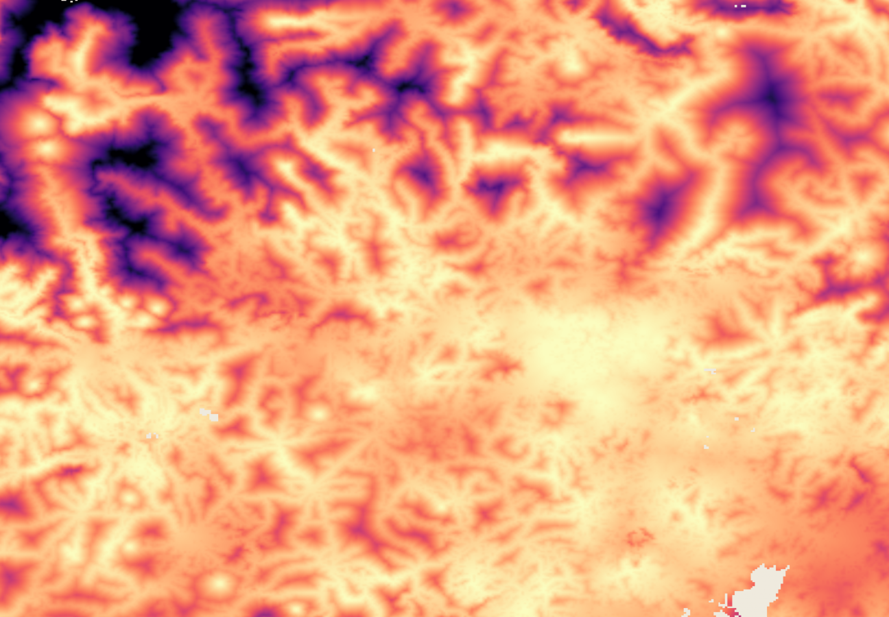
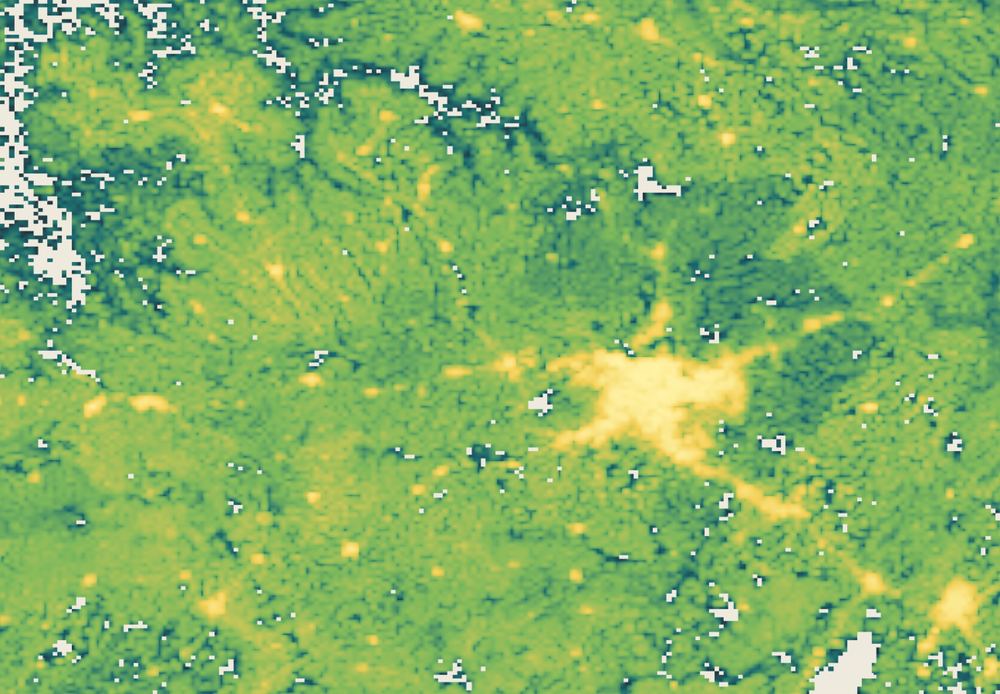
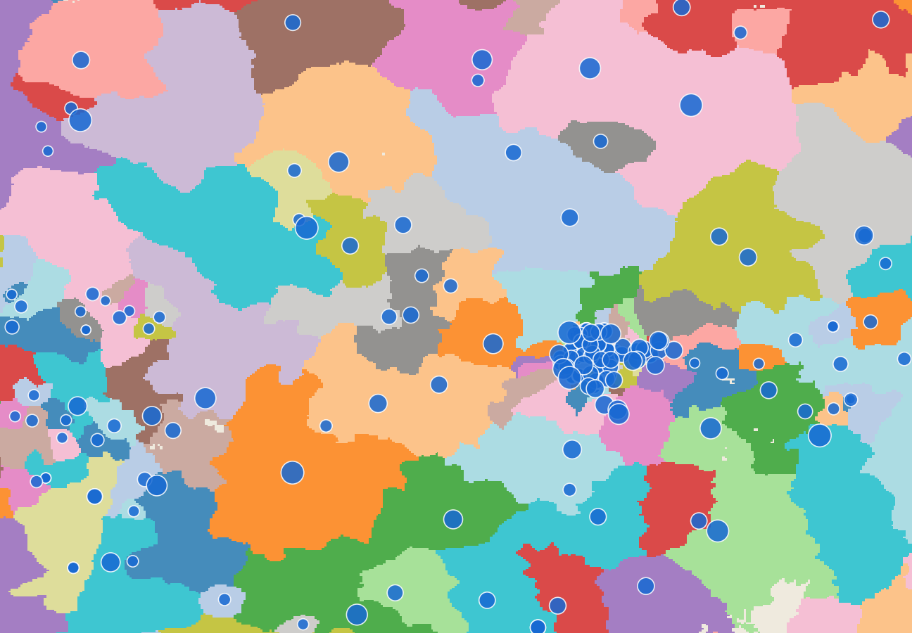

Accessibility map
Minutes to the nearest market
A stack of spatial layers becomes minutes to the nearest market.

Travel time defines the nearest market. Population counts are summed into that market.

